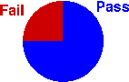

Other displays of discrete and categorical data
Two variations of the standard bar chart of discrete and categorical data are often encountered. A stacked bar chart is simply a bar chart in which the bars are stacked on top of each other. It is particularly useful when comparing several distributions since the stacked bar charts can be drawn side by side.
In a pie chart, a circle is split into segments according to the proportion of data values in each category. The angle for each category is given by the proportion.

Although pie charts seem visually different from the two types of bar chart, they are closely related.
In bar charts, stacked bar charts and pie charts, the area for any category equals the proportion of values in that category
The bar chart below again shows the assessed 'originality' of a story-completion task by 1400 year 10 students.
Drag the slider to the right to stack the bars of the bar chart.
In the diagram below, drag the slider to change the stacked bar chart into a pie chart.
Beware 'chartjunk'
Bar charts and pie charts are usually graphical displays of a very small amount of information. A small frequency table often contains the same information. The pie chart below only shows that 75% of this class passed the exam — information that can be expressed in a single value!

There is therefore a temptation to embellish bar charts and pie charts by adding a third dimension or using pictures instead of simple rectangles in a bar chart. This is often called chartjunk. (Software such as Excel makes it easy to do this.) Try to resist the temptation since some of these embellishments can be misleading.
It is best to draw a pie chart simple and small.
Bar charts and pie charts highlight different aspects of the data
Although a bar chart and a pie chart are visual representations of the same values (the proportions in the categories), they highlight different features of these proportions. Bar charts provide better comparisons of the individual proportions, whereas pie charts allow us to assess better the proportions in two or more adjacent categories.
The diagrams below describe the reading age of 120 students in the junior classes of a primary school. Each student was classified as reading at their chronological age, up to 6 months above or below, up to 12 months above or below, or over 1 year above or below.
The bar chart shows that the proportion with reading age 1-6 months below their chronological age is slightly greater than the proportion 7-12 months below. This is less obvious from the pie chart. Click on the categories to read off the exact proportions.
On the other hand, the pie chart shows that more than a quarter of the students have reading age more than 6 months below their chronological age. This information is not immediately apparent in the bar chart. Drag over adjacent categories to read off the proportion of the population in these groups.